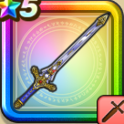

世界樹のつるぎ
攻略班 8.0点 / かえん斬りいなずま斬りブレードガード灼熱なぎはらい導きの天光※錬成で強化可能
くわしい特徴
【レベル別習得スキル】 Lv1【バトマス】さいだいMP+12 Lv1かえん斬り（消費MP：3）敵1体に威力130%のメラ属性斬撃ダメージを与える Lv10いなずま斬り（消費MP：3）いなずまを剣に纏わせて斬り敵1体に威力130%のデイン属性斬撃ダメージを与える Lv15ブレードガード（消費MP：7）自身のガード率を1段階上げる Lv20灼熱なぎはらい（消費MP：24）敵全体にメラ属性200％の斬撃ダメージを与え、まれに攻撃呪文の威力を1段階下げる Lv30導きの天光（消費MP：28）敵1体にイオ属性400％の斬撃ダメージを与える Lv35エレメント系へのダメージ+5% Lv40悪魔系へのダメージ+5% Lv45【晴れ】灼熱なぎはらいのダメージ+10％ Lv50攻撃力+12錬成スキル改1いきなりまもりのたて（消費MP：武器毎に異なる）戦闘開始時に悪い状態変化とすべての状態異常をふせぐ加護が自動で宿る(効果ターンは武器毎に異なる)改2導きの天光改（消費MP：31）敵1体に威力500%のイオ属性斬撃ダメージを与える改3悪魔系へのダメージ+10%改4錬成ぶき特別演出解放・メガモン討伐結果発表時に特別演出が追加・武器の見た目に特別なエフェクトが追加改5導きの天光改のダメージ+2%改6導きの天光改のダメージ+2%改7導きの天光改のダメージ+3%改8導きの天光改のダメージ+3%改9導きの天光改のダメージ+4% 【限界突破スキル】 1凸スキルの斬撃・体技ダメージ+5% 2凸スキルの斬撃・体技ダメージ+5% 3凸スキルの斬撃・体技ダメージ+5% 4凸スキルの斬撃・体技ダメージ+5%